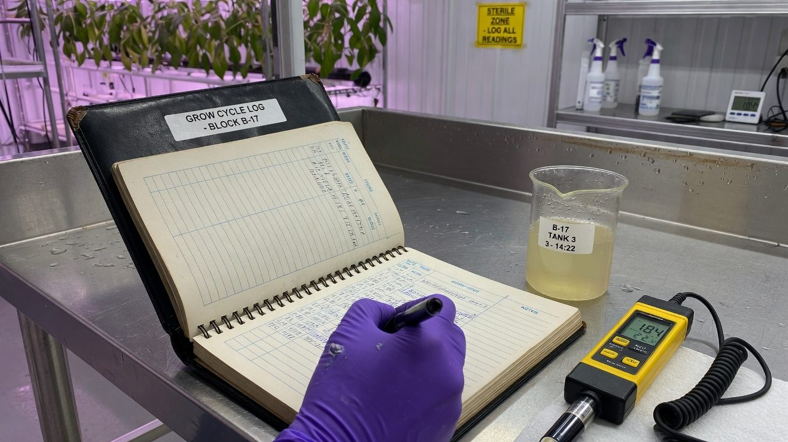
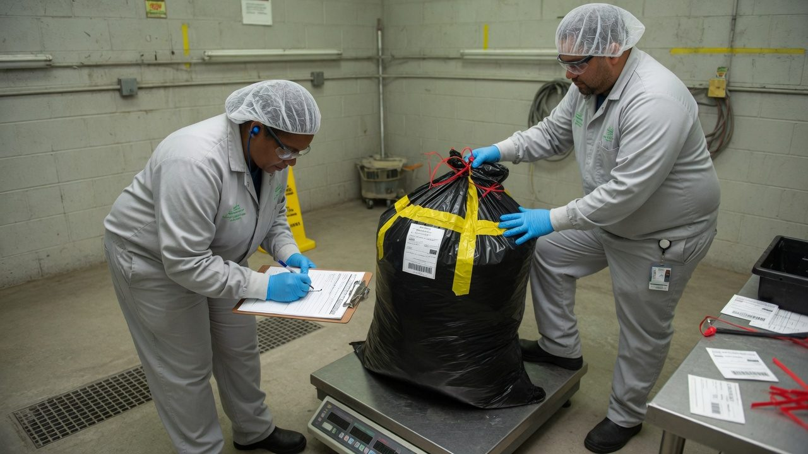

Compliance, licensing and track-and-trace
A licensed grow is a paperwork machine with a garden attached. This guide maps the spine: what a licence actually is, how batches and lots connect every gram to its history, how seed-to-sale tracking works, and how to keep records an auditor believes.
What This Is — and What It Is Not
This paper explains how cannabis licensing, traceability and record-keeping work in general terms, so the vocabulary and the logic make sense before you read your own regime's documents. It is not legal advice, it is not regulatory advice, and it describes no specific facility. Regimes differ by country and change over time; the regime descriptions here were checked in August 2026 and will drift. Your licence, your regulator's current guidance and your lawyer outrank every sentence on this page.
Growing the plant is half the job. The other half is being able to prove — to a stranger, on paper, at any moment — where every gram came from, where it went, and that you did what your own rules say you do. That proof system is what this paper is about.
It is written for the person who just got handed ‘compliance’ along with the watering: the first-licence operator, the small team where the head grower is also the quality manager, the technician who has never met an auditor. No prior knowledge is assumed. Every term is defined before it is used.
The route: what a licence actually is and how it lives; how to deal with the regulator; batch and lot thinking (the genealogy that connects everything); seed-to-sale tracking and the reconciliation habit; records that survive an audit; deviations without the bureaucracy; the GACP/GMP boundary and quality agreements; security and destruction; recall readiness; a walkthrough of audit day; and two real regimes — New Zealand and Australia — described from altitude as worked examples.
Accuracy, self-review, and grain-of-salt notes
We've gone to great lengths to keep these guides honest. One of the main ways we do that is self-review: we actively look for claims that are subjective, only lightly backed by literature, or based on grower practice rather than a controlled study — and we call those out instead of dressing them up as settled science.
Often there simply is no paper for the decision you're making. In those cases we're drawing on what other growers report and what has worked in our own rooms. That can still be useful — but it is not a lab proof. Do what works for your plants, your room, and your meters. If a table disagrees with your crop, believe the crop and log the difference.
- Core definitions and measurement units used in the paper
- Safety-critical limits where occupational or standards sources are cited
- Numeric stage targets (light, climate, feed) as starting bands, not laws
- SOPs that work in many rooms but need your genetics and meters
- Any single-number 'guaranteed' yield or potency claim without a multi-site trial
- Controller setpoints copied from another facility without re-calibration
See something glaringly wrong? Tell us and we'll fix it. Please open a GitHub issue with the paper name and what looks off (include a source if you have one): Report an accuracy issue. Local law, labels, and licences always override any recipe here. Inline notes labelled grain of salt flag the highest-risk over-trust points in the text.
The Core Answer: Prove Control, to a Stranger, on Paper
Every rule in every cannabis regime compresses to one demand: demonstrate control. Control of the material — nothing enters, moves, or leaves except as recorded. Control of the process — what happens to the plant follows written rules. And the demonstration must work for someone who was not there and trusts nothing but the record.
Most new operators obsess over layer one — getting the licence — and starve layer three. That is backwards. Licences are rarely lost on the day they are granted; they are lost years later, at the records layer, when an auditor asks a simple question the paperwork cannot answer. In pharmaceutical GMP, documentation is not admin support for the real work; it is defined as part of the quality system itself[1], and cannabis regimes borrow that DNA directly.
Write every record for a reader who was not in the room, knows nothing, and is mildly suspicious. If a competent stranger can reconstruct what happened — who, what, when, how much, why — from your records alone, you pass. If the record only makes sense with you standing next to it explaining, it is not a record; it is a memory aid.
Key Terms: The Words That Do the Work
Compliance conversations fail when two people use the same word for different things. These definitions are generic; your regime's legal definitions override them, and part of setting up a facility is writing down which definitions you use.
Licence Anatomy: Activities, Conditions, Renewals
A cannabis licence is not one permission; it is a bundle of named activities with strings attached. New Zealand's scheme, for example, builds each licence from activities such as cultivation, nursery (supplying seeds and propagation material), research, possession for manufacture, and supply[2]. Australia consolidated its federal structure in December 2021 into a single medicinal cannabis licence that can cover cultivation, production, manufacture and research, with permits underneath it[3]. The naming differs; the pattern — activities plus conditions plus quantities — repeats almost everywhere.
Read your licence as a machine with parts:
Two habits prevent most licence trouble. First, a compliance calendar: every expiry, renewal window, report deadline and fee, with alerts at 90, 60 and 30 days. Renewals are administratively boring and operationally fatal to miss. Second, treat variations as prerequisites, not paperwork catch-up: if you want to add a room, an activity, or a key person, the general rule across regimes is ask first, act after — and the operators who get this wrong usually knew the rule and gambled on nobody looking.
Print it. Read every condition aloud with the people who run the rooms. Operators are routinely surprised by what is actually written on the document they operate under — usually because the person who applied for it has left, and the conditions live in nobody's head.
The Regulator: Inspections, Notifications, Variations
The regulator is not a customer, not a mate, and not an enemy. The productive mental model is external quality assurance with statutory power: they exist to verify control, and everything they ask maps back to that. In New Zealand that function sits with a dedicated agency inside the Ministry of Health that administers the scheme and its licensing[5]; in Australia, with the Office of Drug Control at the federal layer[4]. Whoever it is, the relationship runs on three channels:
| Channel | Direction | Typical triggers | The golden rule |
|---|---|---|---|
| Notification | You → them | Theft or loss of material, security incidents, significant deviations, changes to key people or circumstances | Notify early and voluntarily. Regulators grade concealment far more harshly than error. |
| Inspection | Them → you | Scheduled cycle, licence grant or renewal, a complaint, a pattern in your reporting | Never bluff. ‘I will check and confirm in writing’ is a strong answer. |
| Variation | You → them | New rooms, new activities, new responsible persons, changed security or process scope | Ask before acting. Retrospective variations read as breaches, because they are. |
Inspection posture matters more than most operators think. Findings are contested in writing, with evidence, after the visit — not argued in the corridor. Take your own notes of everything said, ask clarifying questions until each finding is specific enough to act on, and respond by the deadline with dated commitments. Then actually do them: a repeat finding at the next inspection is graded harder than the original, because it demonstrates the thing regulators care most about — whether your system self-corrects.
‘Usually.’ As in ‘we usually log that’. Usually means the written procedure and the actual practice have separated, and the inspector now knows it. If practice has drifted from the SOP, fix one of them — formally, via a change note — before someone else finds the gap.
Batch and Lot Thinking: the Genealogy
A batch is a promise of uniformity: a defined quantity of material that went through the same process at the same time, so one test result, one record, one decision can honestly speak for all of it. Everything in traceability hangs off that promise.
In a grow room the practical translation is: plants started together and treated the same are a batch; the moment treatment diverges — different room, different feed, a spray applied to some and not others — you have two batches, whether or not you wrote it down. The paperwork should follow the biology, not the other way round. Formal quality systems define batch and lot carefully and expect full traceability of what went into each one[6]; small operators mostly get in trouble not by defining batches badly but by merging and splitting them silently.
This is why one plant's records matter. Genealogy means records inherit downward: the spray on the mother is part of the pesticide history of the packaged lot four generations later; the CoA on the packaged lot is only meaningful because the chain above it is unbroken. It cuts the other way too — a missing record poisons everything downstream, because you can no longer prove the negative. ‘We never sprayed that crop’ is unprovable if the spray log has a three-week hole in it.
- Make IDs human-readable and unique. A scheme like CL-2603 (clones, week 26, 2003rd batch — whatever your convention is) beats both ‘the back table’ and a bare UUID. Write the convention down.
- Splits and merges are events. Two harvest lots combined into one dry lot is a recorded transformation with weights on both sides — not a quiet tidy-up.
- Never let a physical thing exist without an ID, even for an afternoon. Unlabelled totes of wet trim are where traceability actually dies.
When something goes wrong — a failed test, a pest found, a contamination scare — you lose material at batch granularity, because the batch is the largest unit your records can vouch for. Small, honestly defined batches turn disasters into write-offs. One big vague batch turns a single failed test into losing the room.
Seed-to-Sale: Tags, Movements, Reconciliation Points
Track-and-trace is perpetual inventory for a controlled substance. Three ingredients: identity (every plant and package carries a tag or UID), events (every movement, transformation, sample and destruction is recorded when it happens), and a ledger that holds it all. The ledger can be a government-mandated platform, commercial software, or a paper book — the logic is identical.
The most instructive worked example is the US state model. Systems like METRC issue physical plant tags and package tags, and licensees report growth stages, harvests, conversions, transfers and disposals against those IDs within set windows[7]. California requires every commercial licensee to record all cannabis activity — cultivation through sale — in its state track-and-trace system, CCTT-Metrc, built on unique identifiers assigned to each plant and package[8]. New Zealand and Australia (as at 2026) run no such state-operated ledger; the same functions live in your own records plus regulator reporting. The software is jurisdictional; the concepts transfer completely.
Principles that survive any software choice:
- Physical equals digital. The room and the ledger must say the same thing at all times. Any gap between them, in either direction, is a finding.
- Record at the moment of the event, at the place of the event. Batch-entering the day's movements from memory at 5 pm is how drift is manufactured.
- Weigh at every transformation. Wet weight at harvest, dry weight after drying, waste weight at trim, net weight at packaging. The differences are your moisture and waste story, and auditors read that story closely.
- Nothing leaves except as a recorded transfer, sample, or destruction. There is no fourth category. ‘Gave some to the lab guy’ is a sample with a log entry, or it is diversion.
- Movements get paper before wheels roll. The manifest — what, how much, from, to, carrier — exists before the material moves, and both ends reconcile against it on arrival.
At small scale a disciplined spreadsheet or paper ledger can satisfy the concepts — if entries are contemporaneous, attributable (who made this entry?), backed up, and never silently edited. The tool is rarely the problem. A track-and-trace system nobody updates until Friday is a liability generator regardless of what it cost.
Inventory Drift: the Finding That Writes Itself
Inventory reconciliation is the audit test that needs no skill to run and no judgement to interpret: the book says X, the scales say Y, explain the difference. That is exactly why unexplained variance is the most reliable way for a small operator to fail — it is the easiest thing to check and the hardest to fake after the fact.
Drift has boring causes: moisture loss nobody logged as the flower cured; trim swept up and binned without a weight; QC pinches and lab samples that never hit the ledger; wet weight recorded in one unit and dry in another; harvest-day chaos where material moved rooms faster than anyone wrote it down. None of these are diversion. All of them look like diversion on paper, and controlled-substance regimes are built to treat unexplained loss as possible diversion until you demonstrate otherwise. When Oregon's state auditors reviewed their recreational system, they flagged reliance on self-reported data and poor data quality in the tracking system as core weaknesses in detecting exactly that[9].
| Line | Amount | Where it comes from |
|---|---|---|
| Opening stock (dried flower) | 12.40 kg | Last verified count |
| + In: new harvest dried | 9.60 kg | Dry-room log, dated |
| − Out: transfers to processor | 4.80 kg | Manifests, signed both ends |
| − Out: destroyed waste | 1.20 kg | Destruction records, witnessed |
| − Out: lab samples | 0.03 kg | Sample log with lot IDs |
| = Expected on hand | 15.97 kg | Arithmetic |
| Physical count | 15.71 kg | This morning, two people |
| Variance | −0.26 kg (−1.6%) | Investigate, explain, document — today |
The fix is cadence plus honesty. Small operations do well with a weekly cycle count of one area and a monthly full count; every variance gets a written investigation the day it is found — even when the conclusion is ‘moisture loss, within expected range, convention updated’. Give the ledger one owner. And log your moisture-loss convention explicitly (e.g. wet-to-dry expected 75–80% loss) so the biggest legitimate shrink in the building stops looking like a hole.
Adjusting the book to match the count without a recorded investigation feels like tidying. In a controlled-substance ledger it is falsification — you have destroyed the evidence of a discrepancy and replaced it with a fiction that everything reconciled. Small visible variances with written explanations are survivable. Clean books that were made clean are not.

Records That Survive an Audit: ALCOA+
Regulators worldwide converge on the same definition of a trustworthy record, usually abbreviated ALCOA: Attributable, Legible, Contemporaneous, Original, Accurate — extended in practice with Complete, Consistent, Enduring and Available (ALCOA+). The US FDA's data-integrity guidance for drug manufacturing is built explicitly on these attributes[10], and cannabis auditors inherit the framework wholesale.
The mechanics for a small operation:
- Bound books with numbered pages, or a digital system with locked history. Loose leaf paper and editable spreadsheets invite exactly the suspicion you are trying to kill.
- Write at the bench, not the office. The clipboard hanging at the point of work beats better software in the wrong room, because it makes the compliant path the lazy path.
- Corrections: single line through, initial, date, reason. The wrong value stays readable underneath. No pencil, no correction fluid, no torn-out pages, no recopying messy originals into a ‘neat’ book — the messy original is the record.
- No blank fields. Strike through what does not apply. A blank is a question mark an auditor fills with their imagination.
- Retention: keep records for years, not seasons — exact minimums are regime-specific and usually written into your licence conditions. Storage that survives staff turnover and a dead laptop is part of the requirement.
Contemporaneous is the attribute that kills, because backfilling has a signature: a week of entries in one pen, one handwriting, one sitting, with no coffee rings, no wear, and suspiciously round timestamps — or a digital log where twenty entries share one burst of system time the night before the inspection. Auditors read logbooks the way forensic examiners read documents, because that is literally the discipline they are borrowing from. A backfilled record discovered is worse than a gap admitted: the gap costs you a finding; the fake costs you your credibility on every other page.
For every routine task, decide what the minimum honest record is — one line, five fields — and build the form so completing it takes less than a minute. Compliance systems fail at the exact point where recording became more effort than the task itself.
Deviations and CAPA-lite for Small Operators
A deviation is any departure from your written process: the dehumidifier died overnight, the feed was mixed at the wrong EC, the wrong room got sprayed, a delivery arrived with no paperwork. The deviation is not the failure. The unrecorded deviation is the failure, because it means your system does not notice its own departures — and noticing is the entire point of a quality system[6].
| Field | What goes in it |
|---|---|
| What happened | Plain factual description, no blame language |
| When found / by whom | Date, time, initials |
| Batches / material affected | IDs, always — this is what links the log to product |
| Immediate action | What you did in the first hour |
| Impact assessment | Can affected batches proceed? Held? Downgraded? Destroyed? |
| Root cause | For anything major: why did the system allow it? |
| Preventive change | SOP edited, alarm added, training done — with dates |
| Closed by / verified | A second person, later, confirming the fix held |
Calibrate the depth. A missed daily check gets three lines and a same-day close. A wrong-tank feed that touched two flowering batches gets impact assessment and a root cause. Classify minor / major / critical in your own procedure so the depth decision is rule-based, not mood-based. What an auditor wants to see is not perfection; it is evidence that you notice, assess product impact, and close loops.
Every real operation deviates. A log with nothing in it does not read as ‘flawless facility’; it reads as ‘nobody is looking’ — or worse, ‘problems get handled off the books’. A healthy log full of small, honestly closed deviations is one of the strongest documents you can put in front of an inspector.
GACP vs GMP — and the Quality Agreements That Bridge Them
Two rule-sets govern the journey from seed to medicine. GACP — Good Agricultural and Collection Practice — covers growing, harvesting and primary processing of medicinal plants: identity, hygiene, inputs, documentation, traceability at the farm layer. The foundational text is the WHO's 2003 guideline[11], and the European medicines regulator maintains a GACP guideline for herbal starting materials whose 2025 revision explicitly accounts for indoor, controlled-environment growing[12]. GMP — Good Manufacturing Practice — covers turning that material into a medicine: validated processes, batch manufacturing records, QC release, an independent quality unit[1]. The PIC/S GMP guide harmonises these expectations across dozens of national inspectorates, including New Zealand's and Australia's[6].
Where exactly the line sits is regime-specific, and it matters commercially. Cultivation through drying and trimming commonly sits under GACP; extraction, formulation and packaging of the medicine sit under GMP. Australia's TGA, for instance, applies GMP to manufacture while cannabis cultivation feeds it as GACP-governed starting material, with product quality pinned by a statutory standard (TGO 93)[13]. As at 2026, check where your regulator draws it — the answer decides which rule-set your dry room lives under, and getting it wrong in either direction is expensive.
For a grower the boundary has a practical meaning: you are a starting-material supplier to a GMP site, and GMP obliges that site to qualify its suppliers. Expect the processor's auditors as well as the regulator's. Your GACP documentation — genealogy, input records, drying logs, CoAs — is their evidence that their starting material is controlled. This is where the quality agreement comes in: a signed split of responsibilities so nothing falls between two companies each assuming the other had it.
| Clause | The question it answers |
|---|---|
| Specifications + CoA duties | What the material must meet, who tests what, whose lab |
| Sampling + retained samples | Who pulls samples, how, who keeps the retains and for how long |
| Deviation notification | Who must tell whom, how fast, when something goes wrong on either side |
| Change notification | Cultivar, inputs, site, process changes — no silent changes to supplied material |
| Complaints + recall roles | Who leads, who notifies the regulator, timelines, out-of-hours contacts |
| Audit rights | The processor may audit the grower; scope and notice |
| Records + retention | Who holds which records, for how long, and access on request |
| Release authority | Named roles: who releases the lot to ship, who releases the product to market |
A testing-lab agreement is a quality agreement too: agreed methods and detection limits, chain of custody for samples, what happens on an out-of-specification result (retest rules, notification), and turnaround. A surprise result from a lab you have no agreement with is a crisis; the same result under a good agreement is a procedure.

Security, Access and Destruction Records
Every regime writes its own security prescriptions — safes, alarm standards, camera retention days — into licence conditions, so this section stays deliberately generic. The underlying logic is constant: controlled material demands controlled custody, and custody is proven the same way as everything else — with records.
- Layers, not one big lock. Site, building, room, container: each layer slows an intruder and narrows who can be inside it legitimately.
- Access is two lists. Who may enter (an authorisation list, maintained, signed) and who did (entry logs, key/code registers, visitor book with escort). Auditors cross-check the two.
- Joiners and leavers. The classic finding is an ex-staffer's code still live months after they left. Offboarding — codes killed, keys returned, lists updated — is a same-day task with a record.
- Visitors are escorted and logged, contractors included. The electrician in the flower room is inside your custody chain while the door is open.
Waste is still controlled material. Trim, fan leaves from flowering plants, failed lots, dead plants — in most regimes cannabis waste remains within the licence's custody obligations until it is rendered unusable and its destruction is recorded. The bin is not an exit from track-and-trace; destruction is an event, with the same dignity as a transfer.
| Element of a defensible destruction record | Why it is there |
|---|---|
| Date, time, location | Anchors the event |
| Material + batch/lot IDs | Links the destruction into the genealogy |
| Weight before destruction | Closes the mass balance |
| Method | How it was rendered unusable and unrecoverable |
| Done by + witnessed by | Two people, two signatures — the single strongest anti-diversion control |
| Sign-off | A responsible person confirms the record complete |
Whole buds visibly discarded, unrendered and unrecorded, is a diversion finding waiting for a drone photo. Render waste unusable by whatever method your regime accepts, weigh it, witness it, record it — then it is rubbish. Before that, it is stock.
Recall Readiness and the Mock Recall
A recall is traceability run under stress: something already released turns out to be suspect, and you must find all of it, fast, and prove you found all of it. Formal GMP systems require a recall procedure and expect it to be tested[6]; the concept scales down to the smallest licensed grower, because the question — where did every gram of that lot go? — is the same at every scale.
Readiness is the ability to run the genealogy in both directions. Trace back: from a product in the market to every input, room, person and process that touched it. Trace forward: from a suspect input — one mother, one nutrient delivery, one dry room — to every lot and customer it reached. Both directions should run from records alone, in hours.
The mock recall is the drill version: pick a lot at random, pretend its test result just failed, and run the whole exercise on paper against the clock. No material moves; the output is a timed report. A common expectation across supply-chain quality schemes is same-day reconciliation of essentially all of the affected quantity — hours, not weeks. Whatever target you adopt, write it down and measure against it.
What breaks in most first attempts: transfers recorded without lot IDs (so the manifest cannot say which lot the processor got); retained samples that exist in the SOP but not on the shelf; and waste weights too vague to close the mass balance. Every one of those is cheap to fix on a Tuesday afternoon and ruinous to discover during a real event.
Audit Day: a Walkthrough
Inspections vary — announced or not, desk or on-site, routine or triggered — but the shape of a survivable audit day is consistent. The work is 90% done before the knock on the door; the day itself is choreography.
- 1Notification receivedConfirm scope, date, duration and who is attending, in writing. Book your own key people. If a named responsible person is legally required to be present, make sure they are.
- 2Pre-audit sweepSelf-inspect against your own SOP index and licence conditions. Close what you can close honestly. Do not backfill records — a gap found is a finding; a fake found is a crisis.
- 3Stage the front roomLicence and conditions, org chart, SOP index, training records, current logs, last inspection's findings and their closure evidence — findable in minutes, not archaeology.
- 4Opening meetingAgree scope and logistics. Appoint one person to route all requests and log every document handed over. Everyone else answers what is asked — nothing more, nothing invented.
- 5The walkInspectors watch practice against procedure: gowning, logs at the bench, labels on totes, locks locking. Answer truthfully; where unsure, say ‘I will check and confirm’ and write it down. Never guess, never bluff, never argue.
- 6The document roomRequests get logged, copies get marked as copies, originals stay yours. If a record does not exist, say so — the recovery plan you offer matters more than the gap.
- 7Closing meetingCapture every finding verbatim and ask questions until each is specific enough to act on. Clarify; do not contest. The place to contest is your written response, with evidence.
- 8The responseWritten, by the deadline: for each finding, the correction, the preventive change, the date, the owner. Then do them and keep the evidence — the next audit opens exactly here.
How small operators actually fail
Almost never through malice, and rarely through ignorance of growing. The recurring failure modes are structural — and every one is visible in advance:
Three weeks of daily checks written the night before, one pen, one handwriting, no wear. Instantly recognisable, and it converts a small gap into a data-integrity crisis. Fix: log gaps honestly, with a dated note explaining them.
Book adjusted to match the count, no investigation, no note. Reads as concealment because it is. Fix: every variance gets a written outcome, however boring.
Practice drifted from the SOP years ago; everyone knows the real way. The inspector now holds proof your system is fiction. Fix: change the SOP or the practice, via a change note, this month.
Procedures written beautifully for the licence application, never opened since; staff have never read them. Fix: short SOPs people actually use, reviewed on a calendar, training recorded.
Alarm codes and keys outlive employment by months. On paper, an unauthorised person has facility access — a security condition breach. Fix: same-day offboarding checklist, with a record.
Last audit’s findings acknowledged, promised, forgotten. Repeat findings are graded harder because they prove the system does not self-correct. Fix: findings live on the compliance calendar until verified closed.
Worked Examples: New Zealand and Australia, From Altitude
What follows describes two real regimes at a high level as at August 2026, purely to show the generic concepts wearing real clothes. Regimes change: rules are amended, guidance is reissued, agencies restructure. Before any real decision, read the regulator's current pages (linked below) and take proper advice.
New Zealand — the Medicinal Cannabis Scheme
New Zealand's scheme is administered by the Medicinal Cannabis Agency within the Ministry of Health, under the Misuse of Drugs (Medicinal Cannabis) Regulations 2019, in force since 1 April 2020[14]. The licence is built from named activities — cultivation, nursery, research, possession for manufacture, supply — and an operator applies for the combination their operation needs[2]. Products must meet a minimum quality standard before they can be supplied, which is what pulls GACP-grade cultivation records and GMP manufacture into the picture for anyone aiming at the medicinal market[5]. Licences carry conditions (security, record-keeping, reporting) and renewal cycles; the Agency publishes application guidance and holds the inspection relationship.
Australia — ODC licensing, TGA quality
Australia splits the job at the federal layer: the Office of Drug Control licenses cultivation, production, manufacture and research under the Narcotic Drugs Act 1967[4], and since 24 December 2021 a single medicinal cannabis licence can cover those activities together, with permits authorising quantities beneath it[3]. Product quality is the Therapeutic Goods Administration's territory: manufacture happens under GMP, cultivation feeds it as GACP-governed starting material, and medicinal cannabis products supplied in Australia must comply with a statutory quality standard, TGO 93[13]. State and territory law adds further layers on top of the Commonwealth ones.
Look at the two side by side and the generic pattern of this whole paper reappears: an activity-based licence with conditions; permits or quantity controls underneath; a quality standard that drags GACP and GMP into cultivation decisions; and security, record and reporting obligations carried as licence conditions. Learn the pattern once, then read your own regime's current documents with it.
Troubleshooting and the Mental Model
| Symptom | Likely cause | Fix |
|---|---|---|
| Stocktake variance every month | Unlogged moisture loss and waste | Write a moisture-loss convention; weigh all waste; weekly cycle counts |
| Inspector finds SOP–practice gaps | Process drifted, documents froze | Quarterly SOP read-through with the crew; change notes, not silent drift |
| Records missing for a stretch of days | One person owned it; they were away | Cross-train; define the daily minimum record set; log gaps honestly |
| Transfer disputed by receiver | Manifest vague, no lot IDs, no weights at handover | Weigh and sign at both ends against the manifest; photograph seals |
| Lab result cannot be tied to a batch | Sampling never recorded | Sample log: lot ID, weight, date, who pulled it, chain of custody |
| Renewal scramble / lapsed permit | No compliance calendar | One calendar, every date, alerts at 90/60/30 days, one owner |
| Deviation log empty for a year | Fear, or nobody looking | No-blame logging; count near-misses; review the log monthly as a team |
| Destruction challenged in audit | No witness, no method, no weights | Two-person rule, fixed method wording, weights before, sign-off |
Run the operation as if the audit is tomorrow and the auditor is a stranger who trusts nothing but paper. The licence says what you may do. The records say what you did. Reconciliation proves no material leaked. Genealogy proves it is all connected. Any gram, any hour, any decision you cannot explain from the records alone — that is the finding. Everything in this paper is just machinery for making those four sentences true.
Where to next: Daily checks is the operational twin of this paper — it builds the daily record set that makes everything here cheap. GMP hash manufacturing describes life on the far side of the GACP/GMP boundary, where your lots become someone else's starting material. And the IPM papers show why the spray log you keep for compliance is the same one that saves your crop.
References
- European Commission. EudraLex Volume 4 — EU Guidelines for Good Manufacturing Practice for Medicinal Products for Human and Veterinary Use (chapters incl. Pharmaceutical Quality System, Documentation, Complaints and Product Recall; annexes incl. Annex 7 Herbal Medicinal Products). (industry/manufacturer or non-journal source) https://health.ec.europa.eu/medicinal-products/eudralex/eudralex-volume-4_en
- Medicinal Cannabis Agency, Ministry of Health New Zealand. Licence activities for medicinal cannabis (cultivation, nursery, research, possession for manufacture, supply). Accessed August 2026. (industry/manufacturer or non-journal source) https://www.health.govt.nz/regulation-legislation/medicinal-cannabis/information-for-industry/licence-activities
- Office of Drug Control (Australia). Medicinal cannabis single licence and permit reforms — Narcotic Drugs Amendment (Medicinal Cannabis) Act 2021, commenced 24 December 2021. Accessed August 2026. (industry/manufacturer or non-journal source) https://www.odc.gov.au/about-us/reviews-and-reforms/medicinal-cannabis-single-licence-and-permit-reforms
- Office of Drug Control (Australia). Medicinal cannabis — licensing of cultivation, production and manufacture under the Narcotic Drugs Act 1967; licence and permit structure. Accessed August 2026. (industry/manufacturer or non-journal source) https://www.odc.gov.au/medicinal-cannabis
- Medicinal Cannabis Agency, Ministry of Health New Zealand. About the Medicinal Cannabis Scheme (licensing regime and minimum quality standard). Accessed August 2026. (industry/manufacturer or non-journal source) https://www.health.govt.nz/regulation-legislation/medicinal-cannabis/information-for-industry/about-the-medicinal-cannabis-scheme
- Pharmaceutical Inspection Co-operation Scheme (PIC/S). Guide to Good Manufacturing Practice for Medicinal Products (PE 009, current version) — incl. Part I basic requirements, batch traceability, Chapter 8 Complaints and Product Recall. PIC/S publications. (industry/manufacturer or non-journal source) https://picscheme.org/en/publications
- Metrc. Cannabis track-and-trace technology platform: RFID plant and package tags, event reporting (growth stages, harvests, conversions, transfers, disposals) used by US state regulatory systems. (industry/manufacturer or non-journal source) https://www.metrc.com/track-and-trace-technology/
- California Department of Cannabis Control. California Cannabis Track-and-Trace (CCTT-Metrc): all licensees must record commercial cannabis activity against unique identifiers from cultivation through sale. Accessed August 2026. (industry/manufacturer or non-journal source) https://cannabis.ca.gov/track-and-trace-system/
- Oregon Secretary of State, Audits Division (2019). Oregon's Framework for Regulating Marijuana Should Be Strengthened to Better Mitigate Diversion Risk and Improve Laboratory Testing (Report 2019-04): reliance on self-reported data and poor data quality in the Cannabis Tracking System flagged as key weaknesses. (industry/manufacturer or non-journal source) https://sos.oregon.gov/audits/Documents/2019-04.pdf
- U.S. Food and Drug Administration (2018). Data Integrity and Compliance With Drug CGMP: Questions and Answers — Guidance for Industry (ALCOA: attributable, legible, contemporaneous, original, accurate). (industry/manufacturer or non-journal source) https://www.fda.gov/regulatory-information/search-fda-guidance-documents/data-integrity-and-compliance-drug-cgmp-questions-and-answers
- World Health Organization (2003). WHO guidelines on good agricultural and collection practices (GACP) for medicinal plants. (industry/manufacturer or non-journal source) https://www.who.int/publications/i/item/9241546271
- European Medicines Agency, Committee on Herbal Medicinal Products. Guideline on Good Agricultural and Collection Practice (GACP) for starting materials of herbal origin (EMA/HMPC/246816/2005, Revision 1, 2025 — updated for indoor and controlled-environment cultivation and the GACP/GMP boundary). (industry/manufacturer or non-journal source) https://www.ema.europa.eu/en/good-agricultural-collection-practice-starting-materials-herbal-origin-scientific-guideline
- Therapeutic Goods Administration (Australia). Complying with the quality requirements for medicinal cannabis: Therapeutic Goods Order No. 93 (TGO 93) product standard; GMP manufacture fed by GACP-governed cultivation. Accessed August 2026. (industry/manufacturer or non-journal source) https://www.tga.gov.au/resources/guidance/complying-quality-requirements-medicinal-cannabis
- New Zealand Government. Misuse of Drugs (Medicinal Cannabis) Regulations 2019 (LI 2019/321), in force 1 April 2020 — licensing regime and minimum quality standard for medicinal cannabis. New Zealand Legislation website. (industry/manufacturer or non-journal source) https://www.legislation.govt.nz/regulation/public/2019/0321/latest/LMS285243.html
Citations marked in-text as [n] map to this list. Primary literature and official guidance except where noted. Cannabis tissue culture is strongly genotype-dependent, verify dilutions, hormone doses and local regulations against the primary sources before relying on them.